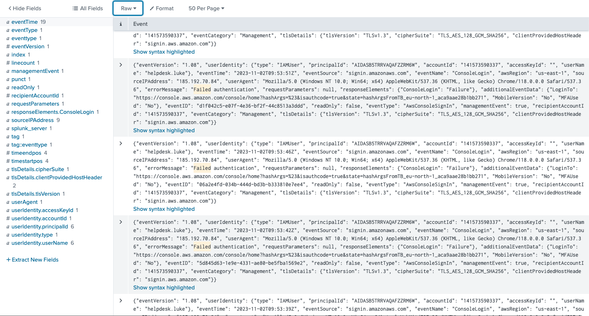
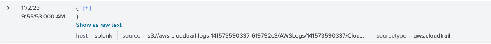
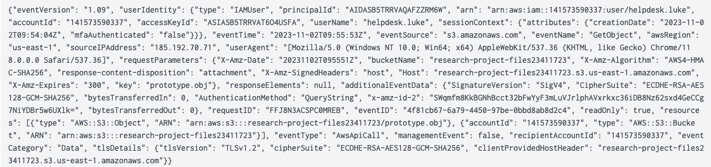
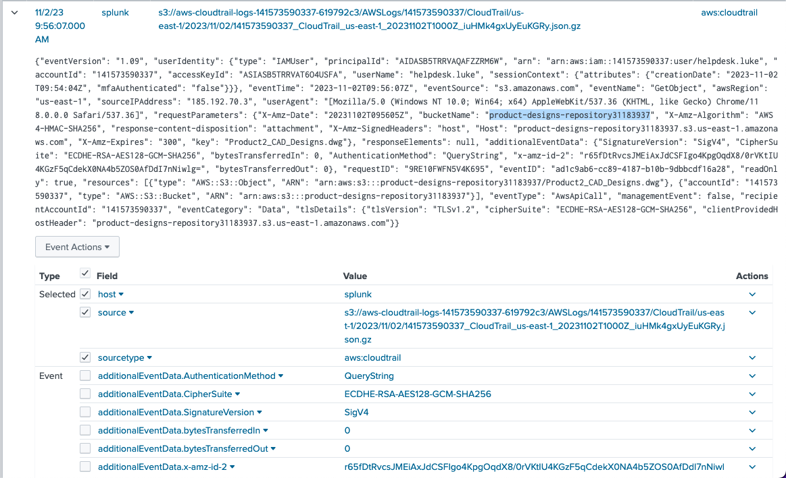
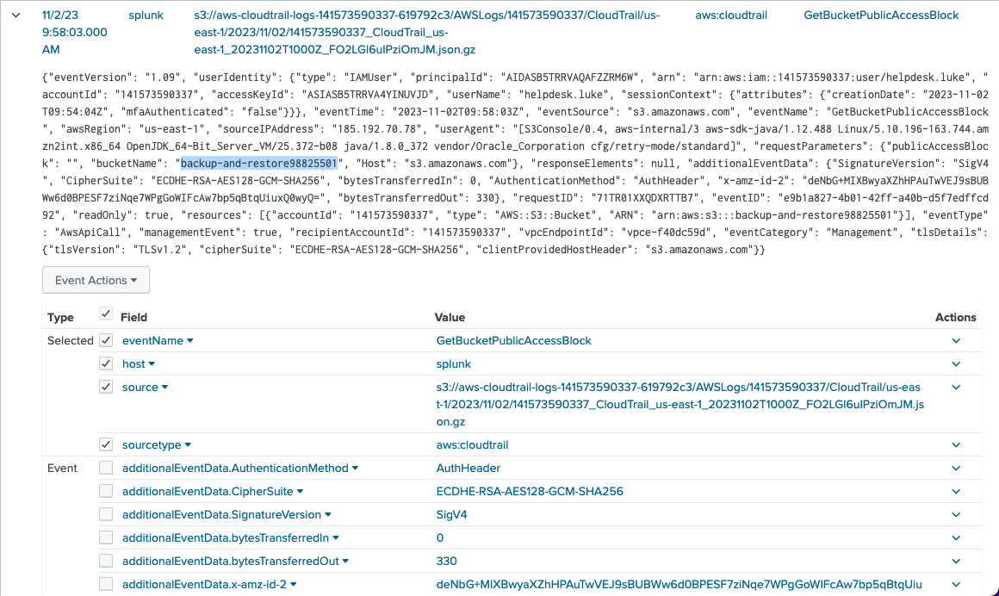
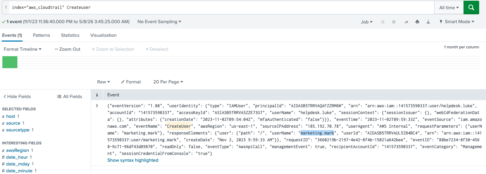
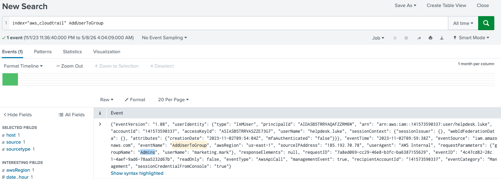

Análisis de laboratorio
AWS Raid Lab
9 May 2026
Escenario
Su organización utiliza AWS para alojar datos y aplicaciones críticas. Se ha informado de un incidente que implica acceso no autorizado a los datos y posible exfiltración. El equipo de seguridad ha detectado actividades inusuales y necesita investigar el incidente para determinar el alcance del ataque.
Preguntas
Saber qué cuenta de usuario se vio comprometida es esencial para comprender el punto de entrada inicial del atacante en el entorno. ¿Cuál es el nombre de usuario del usuario comprometido?
Generalmente, para identificar este tipo de accesos se analizan los intentos de autenticación. En este caso, utilizando Splunk y filtrando eventos del índice aws_cloudtrail relacionados con fallos de inicio de sesión, se observó que un usuario presenta múltiples intentos fallidos en un corto periodo de tiempo desde la misma dirección IP, lo que indica un posible acceso no autorizado.

Debemos investigar los acontecimientos que siguieron al compromiso inicial para entender los motivos del atacante. ¿Cuál es la marca de tiempo para el primer acceso a un objeto S3 por parte del atacante?
Teniendo identificado al usuario comprometido, se agregó al filtro la actividad relacionada con S3, que es un servicio de almacenamiento de Amazon Web Services. Se observaron 8 eventos relacionados con este usuario y, al inspeccionar el primero, se identificó una acción GetObject, la cual indica un intento de acceso a un archivo almacenado en un bucket S3. Además, en el JSON se puede observar que el usuario no utilizó autenticación multifactor.


Entre los buckets S3 a los que accede el atacante, uno contiene un archivo DWG. ¿Cómo se llama este cubo?
Continuando con el análisis de eventos relacionados con S3 en Amazon Web Services, se agregó el filtro dwg, ya que corresponde a la extensión del archivo. Esto permitió identificar un único evento relacionado con un archivo .dwg. Al inspeccionar el JSON, se observó el nombre del archivo y también el nombre del contenedor (bucketName) donde se encontraba almacenado.

Hemos identificado cambios en la configuración de un depósito que permitieron el acceso público, una preocupación de seguridad significativa. ¿Cuál es el nombre de este cubo S3 en particular?
Durante el análisis de eventos relacionados con S3 en Amazon Web Services, se identificó un evento GetBucketPublicAccessBlock, el cual permite consultar la configuración de acceso público de un bucket S3. Al inspeccionar el JSON, se observó que dicho bucket también fue consultado por el mismo usuario comprometido.

La creación de una nueva cuenta de usuario es una táctica común que los atacantes utilizan para establecer la persistencia en un entorno comprometido. ¿Cuál es el nombre de usuario de la cuenta creada por el atacante?
Al identificar que la pregunta estaba relacionada con persistencia, se tuvo en cuenta que un evento CreateUser corresponde a la creación de nuevas cuentas en Amazon Web Services. Por ello, se agregó este parámetro a la búsqueda en Splunk, obteniendo un evento donde nuevamente se relaciona el usuario comprometido junto con los datos de la nueva cuenta creada.

Después de la creación de la cuenta, el atacante agregó la cuenta a un grupo específico. ¿Cuál es el nombre del grupo al que se añadió la cuenta?
Anexando el filtro del evento AddUserToGroup en Splunk, el cual corresponde a la acción de agregar un usuario a un grupo en Amazon Web Services, se identificó un único evento relacionado con los indicadores de compromiso observados anteriormente.

Conclusión
A través de este análisis podemos observar la importancia de mantener un mejor control sobre los accesos en gestores de servicios web como Amazon Web Services. También fue posible identificar distintas acciones relacionadas con accesos no autorizados e incluso cuentas comprometidas. Además, este tipo de análisis permite comprender mejor el comportamiento del atacante, sin dejar de lado la importancia del monitoreo constante para detectar actividades sospechosas dentro de un entorno comprometido.